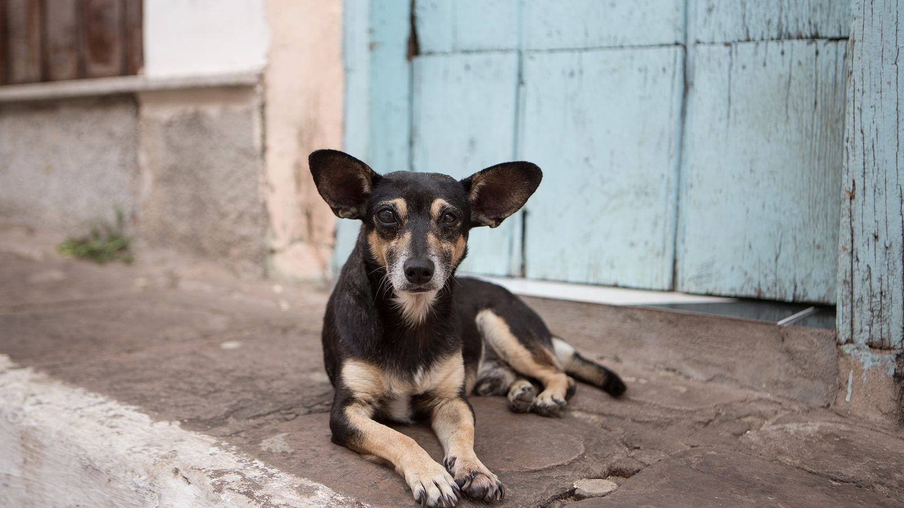

Razón principal por la cual hay tantos perros callejeros
El abandono o la tenencia irresponsable de estos animales es una de las principales razones de que se encuentren en las calles deambulando sin control. Debido a la falta de conocimiento sobre los cuidados y responsabilidades que conlleva el comprar o adoptar una mascota algunos optan por abandonarlos en lugar de buscarles un hogar sin siquiera preocuparse por las penurias que posiblemente pasará el canino.
Más razones por las que a menudo se pueden ver perros callejeros es que no tienen un hogar, o que, perteneciendo a uno, pasan la totalidad o parte del día fuera de su casa, ya sea por la falta de debidos cuidados de sus propietarios, abandono o por haber nacido en la calle, y por lo tanto pasar por circunstancias como:
Maltratos
Enfermedades
Hambre
Atropellamientos

Los perros evolucionan cuando conviven con el ser humano, cuando son queridos y considerados un miembro de la familia, si no son domesticados en un hogar, al intentar valerse por sí mismos pueden presentar conductas salvajes con riesgo para la población.